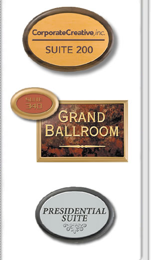

|
V-Frames are vaccu-formed plastic frames in
seven sizes and four colors that will add a
distinctive border to your signage.
FEATURES
- 7 Standard Sizes
- 4 Distinctive Colors
- Accepts 1/16" and
3/32" Inserts
- Easy Screw and Tape Mounting
Options
TYPICAL USES
- Room Identification
- Directional Signs
- Personnel Signs
- Departmental Signs
|

|